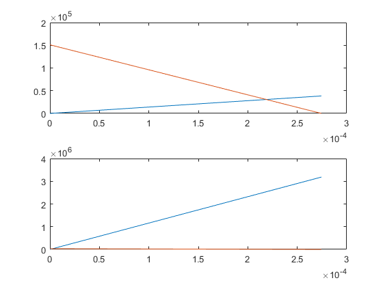

Contents
clear all
close all
clc
Variables
p=10e6;
Di=70e-3; Dy=76e-3; d=30e-3; l=250e-3; h=35e-3; b=8e-3;
Es=210e9; Eal=70e9; Dyr=110e-3; Fn_ut=p*pi*(Di/2).^2; Fn_in=p*(pi*((Di/2).^2-(d/2).^2)); x_dist=5e-3;
Screw Test: M16
skruvdata=skruv(2); d1=skruvdata(1); d2=skruvdata(2); dw=skruvdata(3); ds=skruvdata(4)*10.^(-3); dh=skruvdata(5); P=skruvdata(6);
Askruv=pi*(ds/2).^2;
Dy_dist=Dy+2*ds+4*x_dist;
Adist=pi/4*(Dy_dist.^2-Di.^2)-4*pi*(ds/2).^2;
Acyl=pi/4*(Dy.^2-Di.^2);
Stiffness Components
Cscrew=Es*Askruv/(l+2*b+h);
Ccyl=Es*Acyl/l;
Cdist=Eal*Adist/h;
Stiffness Structure
Cs_ut=4*Cscrew;
Ck_ut=(1/Ccyl+1/Cdist).^(-1);
Cs_in=Cdist;
Ck_in=(1/Ccyl+1/(4*Cscrew)).^(-1);
C=[Cs_ut Ck_ut; Cs_in Ck_in];
Calculation Fk_in,Fs_ut and stress
F0_utus=Ck_ut/(Cs_ut+Ck_ut)*(Fn_ut);
F0_inus=Ck_in/(Cs_in+Ck_in)*(Fn_in);
F0_us=[F0_utus F0_inus];
Fk_in=max(F0_us)-Ck_in/(Cs_in+Ck_in)*(Fn_in);
Fs_ut=max(F0_us)+Cs_ut/(Cs_ut+Ck_ut)*(Fn_ut);
dF_screw=Fs_ut-Fk_in;
dFa=dF_screw/2;
Asp=pi/16*(d1+d2).^2;
sigma_a=dFa/(4*Asp);
Plot
delta_ut=max(F0_us)*(1/Cs_ut+1/Ck_ut);
Cs_utpy=[0 Cs_ut*delta_ut];
Cs_utpx=[0 delta_ut];
Ck_utpy=[0 Ck_ut*delta_ut];
Ck_utpx=[delta_ut 0];
delta_in=max(F0_us)*(1/Cs_in+1/Ck_in);
Cs_inpy=[0 Cs_in*delta_in];
Cs_inpx=[0 delta_in];
Ck_inpy=[0 Ck_in*delta_in];
Ck_inpx=[delta_in 0];
figure;
ut=subplot(2,1,1);
plot(ut,Cs_utpx,Cs_utpy);
hold on
plot(ut,Ck_utpx,Ck_utpy);
in=subplot(2,1,2);
plot(in,Cs_inpx,Cs_inpy);
hold on
plot(in,Ck_inpx,Ck_inpy);

F0_es
F0_ut=Ck_ut/(Cs_ut+Ck_ut)*(Fn_ut*1.25);
F0_in=Ck_in/(Cs_in+Ck_in)*(Fn_in*1.25);
F0_ms=[F0_in F0_ut];
delta_pl=31e-6;
F0_utes=F0_ut+delta_pl*(Cs_ut*Ck_ut/(Cs_ut+Ck_ut));
F0_ines=F0_in+delta_pl*(Cs_in*Ck_in/(Cs_in+Ck_in));
F0_es=[F0_ines F0_utes];
F0_delta=max(F0_ms)-max(F0_es);
Mtot
my_max=0.26; myb_max=0.18;
my_min=0.14; myb_min=0.08;
rm=(dh+dw)/4;
Mtot_max=max(F0_es)*(0.16*P+0.58*my_max*d2+myb_max*rm);
F0_wc=Mtot_max/(0.16*P+0.58*my_min*d2+myb_min*rm);
Max Stress
Fs_utes=F0_wc+Cs_ut/(Cs_ut+Ck_ut)*(Fn_ut*1.25);
sigma_max=Fs_utes/(4*Asp);
Important Variables
fprintf('Mtot:%2.2d \nF0_wc:%2.2d \nsigma_a:%2.2d \nsigma_max:%2.2d \n',Mtot_max,F0_wc,sigma_a,sigma_max);
sigma_b=800e6; sigma_s=640e6; sigma_atill=50e6;
if sigma_max < sigma_s && sigma_a < sigma_atill
fprintf('\nSkruven M%2.0d klarar kraven enligt 8.8\n.',skruvdata(4));
else
fprintf('Skruven M%2.0d klarar inte kraven enligt 8.8. Byt skruv.\n',skruvdata(4));
end
Mtot:9.22e+01
F0_wc:7.73e+04
sigma_a:2.70e+07
sigma_max:5.79e+08
Skruven M 8 klarar kraven enligt 8.8
.